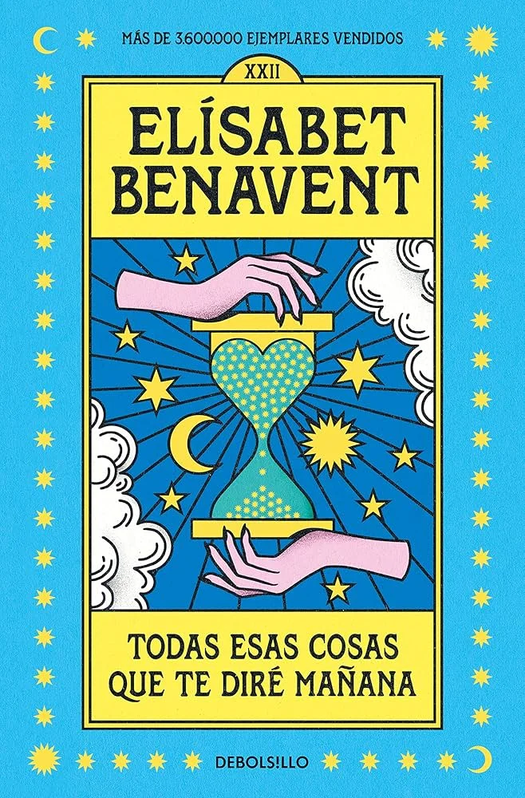
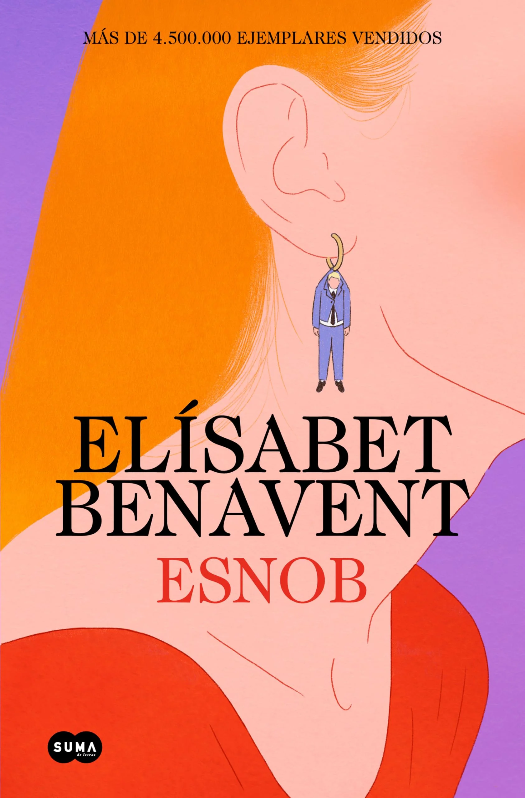

Bienvenidos a nuestro espacio dedicado a los apasionados de la lectura, donde cada libro recomendado
está cuidadosamente seleccionado para hacerte vibrar. Aquí encontrarás una cuidadosa selección de
novelas románticas que te emocionarán y thrillers que te mantendrán en suspenso hasta la última
página. Si disfrutas de las historias intensas, los giros inesperados y los personajes inolvidables,
este es tu lugar ideal.
Explora autores fascinantes, descubre tramas que te envolverán desde el primer capítulo y sumérgete
en mundos donde el amor y el misterio se entrelazan. Además, para hacer tu experiencia aún más
sencilla, incluimos enlaces directos a las mejores tiendas para que puedas adquirir tus próximos
favoritos sin complicaciones. Déjate guiar por nuestras recomendaciones y prepárate para disfrutar
de una aventura literaria única. ¡Tu próxima gran lectura te espera!
Libros por autor
Elisabeth Benavent
Sobre la autora
Elísabet Benavent (Gandía, Valencia, 3 de julio de 1984), conocida como Beta Coqueta, es una
escritora española de novelas de comedia romántica.1
Elísabet Benavent es licenciada en Comunicación Audiovisual por la Universidad Cardenal Herrera CEU
de Valencia, tras esa licenciatura se mudó a Madrid donde cursó el máster sobre Comunicación y Arte
en la Universidad Complutense de Madrid, lugar donde actualmente reside la escritora.
Últimas novedades
Esnob, la última novela de Elísabet Benavent: ya es la más vendida. Imagina: eres un tiburón de las
finanzas estilo lobo de Wall Street, perteneces a una buena familia y siempre lo has tenido todo;
por no hablar de que no hay chica que se te resista.
Novelas
Todas las cosas que te diré mañana

El arte de engañar al Karma
Esnob

Redes sociales
Carmen Mola
Sobre la autora
Carmen Mola es el seudónimo con el que los escritores españoles Jorge Díaz, Agustín Martínez y
Antonio Mercero publicaron la saga de novelas iniciada con La novia gitana en la editorial Alfaguara
a partir de 2018, con el personaje de la inspectora Elena Blanco como protagonista. La identidad
verdadera de estos autores se conoció en octubre de 2021, cuando ganaron el Premio Planeta con su
nueva novela La Bestia.
Últimas novedades
Tras obtener el Premio Planeta con La Bestia (2021), Carmen Mola ha publicado el cuarto título de la saga de Elena Blanco: Las madres (Alfaguara Negra, 2022). Libro 5 de La novia gitanaMagnífica, brutal y enormemente adictiva, Carmen Mola se supera en el esperado desenlace de la serie Inspectora Elena Blanco.
Novelas
La novia gitana
Susana Macaya, de padre gitano pero educada como paya, desaparece tras su fiesta de despedida de
soltera. El cadáver es encontrado dos días después en la Quinta de Vista Alegre del madrileño barrio
de Carabanchel. Podría tratarse de un asesinato más, si no fuera por el hecho de que la víctima ha
sido torturada siguiendo un ritual insólito y atroz, y de que su hermana Lara sufrió idéntica suerte
siete años atrás, también en vísperas de su boda. El asesino de Lara cumple condena desde entonces,
por lo que solo caben dos posibilidades: o alguien ha imitado sus métodos para matar a la hermana
pequeña, o hay un inocente encarcelado.
Por eso el comisario Rentero ha decidido apartar a Zárate del caso y encargárselo a la veterana
Blanco, una mujer peculiar y solitaria, amante de la grappa, el karaoke, los coches de coleccionista
y las relaciones sexuales en todoterrenos. Una policía vulnerable, que se mantiene en el cuerpo para
no olvidar que en su vida existe un caso pendiente, que no ha podido cerrar.
Investigar a una persona implica conocerla, descubrir sus secretos y contradicciones, su historia.
En el caso de Lara y Susana, Elena Blanco debe asomarse a la vida de unos gitanos que han renunciado
a sus costumbres para integrarse en la sociedad y a la de otros que no se lo perdonan, y levantar
cada velo para descubrir quién pudo vengarse con tanta saña de ambas novias gitanas.
La red púrpura
Las madres
Redes sociales
Alice Kellen
Sobre la autora
Alice Kellen es una escritora española de literatura romántica juvenil y adulta. Comenzó su carrera como escritora en 2013 con Llévame a cualquier lugar y ha seguido publicando hasta la actualidad, contando ya con quince libros en el mercado.
Últimas novedades
La última novela de Alice Kellen se titula Donde todo brilla y es una conmovedora historia de amor, amistad y crecimiento personal. Donde todo brilla, una de las novelas españolas contemporáneas más populares en BookTok, tiene como protagonistas a Nicki y River.